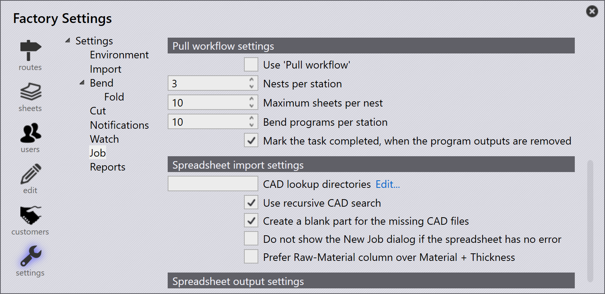

Importar trabajos
Importar desde csv o xlsx
También puede importar trabajos en formatos de texto comunes
-
Haga clic en File → Open → Importar tareas, aparece el diálogo Open Folder. Seleccione
C:\Program Files\Metamation\Praxis\Samples\Jobs\C0\C0.csv.
-
Si todas las piezas existen en la ubicación csv o en los directorios de carpeta de búsqueda, aparece la ventana nueva tarea listando todas las piezas que coinciden con los campos csv.
-
Las piezas faltantes se ignoran y no aparecen en la ventana nueva tarea.
-
Inicialmente el estado de la pieza es Nascent.

-
Haga clic en OK, ahora las piezas se importan en la Biblioteca de Piezas. Se realiza la validación CAD, herramientas para instancia de herramientas de plegado y corte que se puede monitorear en la pantalla Pmonitor.

Crear una pieza en blanco para los archivos CAD que faltan
Al importar trabajos usando una hoja de cálculo (.csv o .xlsx), a veces puede tener filas que hacen referencia a archivos CAD que no están disponibles en el sistema.
-
Para manejar esto, vaya a fábrica → Ajustes → Tarea, en Importación de hoja de cálculo habilite Crear una pieza en blanco para los archivos CAD que faltan

Cuando esta opción está seleccionada:
-
Si falta un archivo CAD para cualquier fila durante la importación del trabajo, el sistema creará automáticamente una pieza en blanco en lugar del archivo CAD faltante.
-
En la ventana nueva tarea, estas piezas faltantes están visualmente resaltadas en amarillo para indicar que el archivo CAD asociado falta.

-
La pieza faltante aún tendrá sus campos mapeados (como nombre de pieza, material, espesor, cantidad, etc.) del CSV. Sin embargo, su estado de pieza se mostrará como Nascent, lo que significa que es solo un marcador de posición vacío sin geometría real aún.

Esto asegura que la importación del trabajo aún pueda proceder sin errores debido a archivos CAD faltantes — puede actualizar o reemplazar la pieza en blanco con el archivo CAD correcto cuando esté disponible.
No mostrar el nuevo diálogo de tarea si la hoja de cálculo no contiene errores
fábrica → Ajustes → Tarea → Importación de hoja de cálculo→ No mostrar el nuevo diálogo de tarea si la hoja de cálculo no contiene errores
-
Cuando esta casilla está seleccionada, el sistema crea automáticamente el nuevo trabajo sin mostrar el diálogo New Job si la hoja de cálculo no tiene errores (sin piezas faltantes, fechas faltantes o datos inválidos).
-
Cuando esta casilla está desactivada, el diálogo New Job siempre aparece para revisión del usuario y confirmación, incluso si la hoja de cálculo no tiene errores.
Prefer raw-material column over material + thickness
fábrica → Ajustes → Tarea→Prefer Raw-Material column over Material + Thickness
-
Cuando esta casilla está seleccionada, el sistema espera que la hoja de cálculo use la columna Raw-Material (por ejemplo, Steel-20). Esto significa que el tipo de material y espesor deben combinarse en un solo valor en una columna.
-
Cuando esta casilla está desactivada, el sistema espera que la hoja de cálculo tenga columnas separadas para Material y Thickness (por ejemplo, Steel y 2.00). El sistema los combina internamente durante la importación.

Carpeta vigilada usando CSV/XLSX
-
En fábrica → Ajustes→ Visualizar marque Habilitar 'Carpeta en directo' y Visualizar también las subcarpetas.
-
Establezca la ruta de carpeta vigilada (UNC o unidad mapeada).
-
En Importación de hoja de cálculo, marque Importar hojas de cálculo de 'Carpeta en directo'.

-
Seleccione Importar tareas de las opciones de Spreadsheet Import.
-
Copie
C:\Program Files\Metamation\Praxis\Samples\Jobs\C0\C0.csvy péguelo en la carpeta Watch. -
El sistema verifica el CSV e intenta crear el trabajo automáticamente.
-
Si falta el archivo CAD, no se crea ningún trabajo porque no se encuentran los datos CAD requeridos.
Directorio de búsqueda CAD y búsqueda CAD recursiva - no configurado
-
En fábrica → Ajustes → Tarea → Importación de hoja de cálculo, si no se establece CAD lookup directories y Usar búsqueda CAD recursiva no se usa, el sistema no busca archivos CAD automáticamente.
-
Si la casilla Crear una pieza en blanco para los archivos CAD que faltan está seleccionada, el trabajo aún se creará incluso cuando falten archivos CAD.
-
En este caso, todas las piezas en el trabajo se crearán como piezas nacientes (en blanco) — lo que significa que no tienen geometría porque no se pudieron encontrar los archivos CAD.

Directorio de búsqueda CAD y búsqueda CAD recursiva - configurado
Cuando Directorios de búsqueda CAD se establece en (C:\Program Files\Metamation\Praxis\Samples) y Usar búsqueda CAD recursiva está habilitado en fábrica → Ajustes → Tarea → Importación de hoja de cálculo:
-
El sistema busca automáticamente en la carpeta especificada y todas sus subcarpetas los archivos CAD requeridos mencionados en la hoja de cálculo.
-
Crear una pieza en blanco para los archivos CAD que faltan también está habilitado, por lo que si aún no se encuentra algún archivo CAD, el sistema creará una pieza en blanco como marcador de posición.